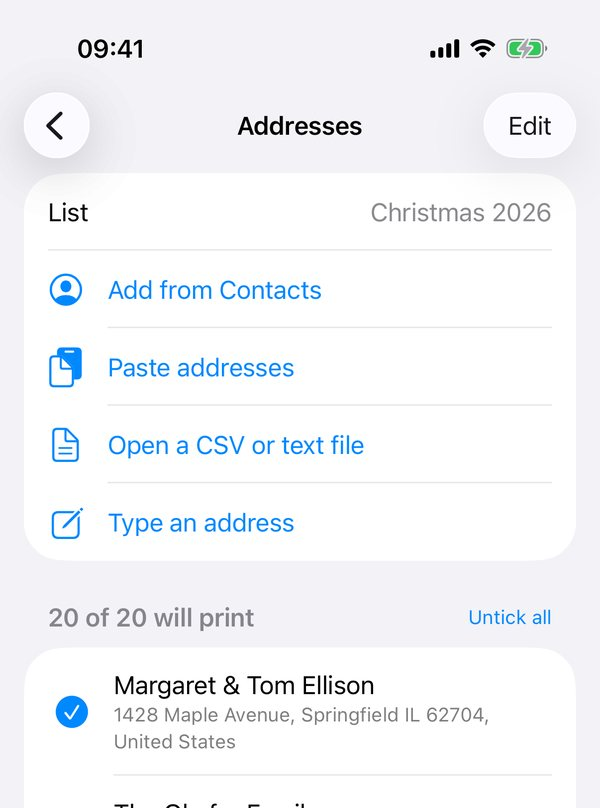

How to print address labels from iPhone contacts
The Contacts app on an iPhone can't print labels; Apple only offers label printing in Contacts on a Mac. On an iPhone or iPad you need an app that reads the addresses and places them on the label sheet you own. Labelfit does that on the device, without an account or an upload.
In Labelfit
- Tap your list under Addresses, then Add from Contacts. iOS asks for access once; Labelfit reads only on your phone.
- Pick a Group if you keep one for cards, or tick people one by one. When someone has a home and a work address, choose which one goes on the label.
- Tap Add. Untick anyone who isn't getting a card this time; they stay in the list for next year.
- Back on the main screen, tap Label sheet and choose the number printed on your pack, such as 5160 or L7160. If your sheet isn't listed, choose Custom and enter its sizes.
- Check the preview. On a sheet you've already used part of, tap the first empty label, or set Start at label.
- Tap Print and choose your printer.

Before using a full sheet of labels, print one page on plain paper, lay it on the label sheet and hold both up to a window. If the text sits close to an edge, run Line up with your printer once; the correction is saved for that printer.
Without an app
On a Mac, open Contacts, select the people or a list, choose File > Print, set Style to Mailing Labels and pick your label number under Layout. If you don't have a Mac, you can export the contacts as a vCard file and use a mail-merge in a word processor, or the free online designer from your label maker. Both work, but they take longer on a phone, and the online designers are hard to use on a small screen.
Labelfit is free to try: test pages are always free, and your first two prints are free (the first sheet each time, no watermark). Labelfit on the App Store.